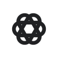
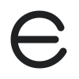

01 / PRIMARY
Continuity Loop
Linked geometricOne task stays continuous across two provider sessions. A heavier, tighter evolution of Ensync’s original linked mark.
Original AI emblem exploration
A bolder, monochrome-first identity with the compact confidence of leading AI brands—built around Ensync’s own continuity loop, without reproducing anyone else’s geometry.
One task stays continuous across two provider sessions. A heavier, tighter evolution of Ensync’s original linked mark.
Multiple providers radiate around a quiet center while keeping the task itself visually protected.

Conversation, project context, and execution overlap into one provider-neutral workspace.
Two execution paths meet through one verified task core without implying unsafe replay.
Conversation is the product surface; four dialogue forms converge around shared context.

A compact continuous “e” turns the brand name into a recognizable motion and sync symbol.
The refined Continuity Loop keeps the strongest part of Ensync’s identity: one task moving safely between provider sessions without losing context. The compact silhouette and monochrome-first treatment give it the presence of a modern AI emblem while staying recognizably Ensync.